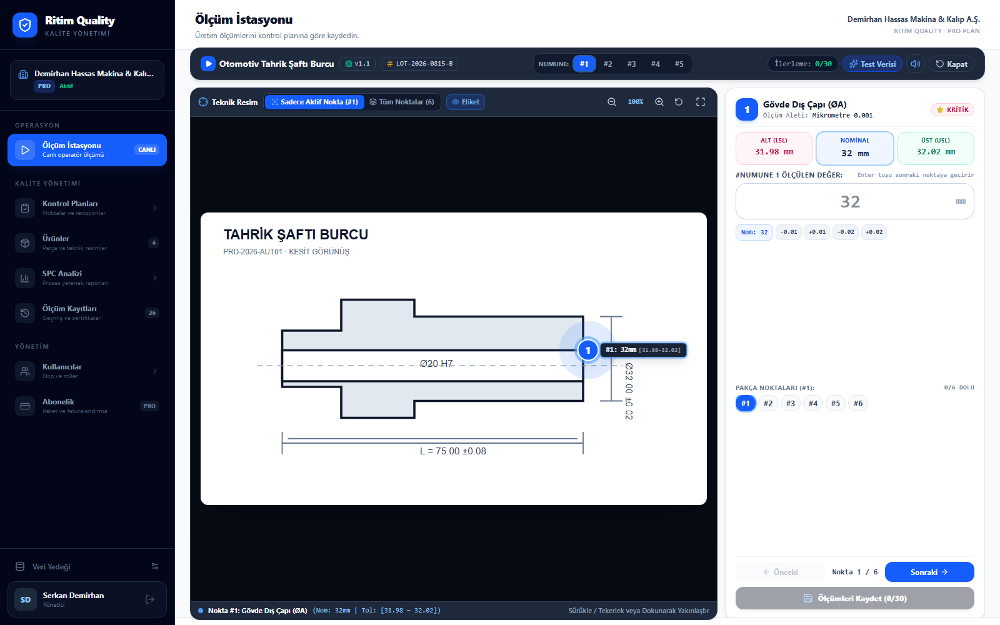
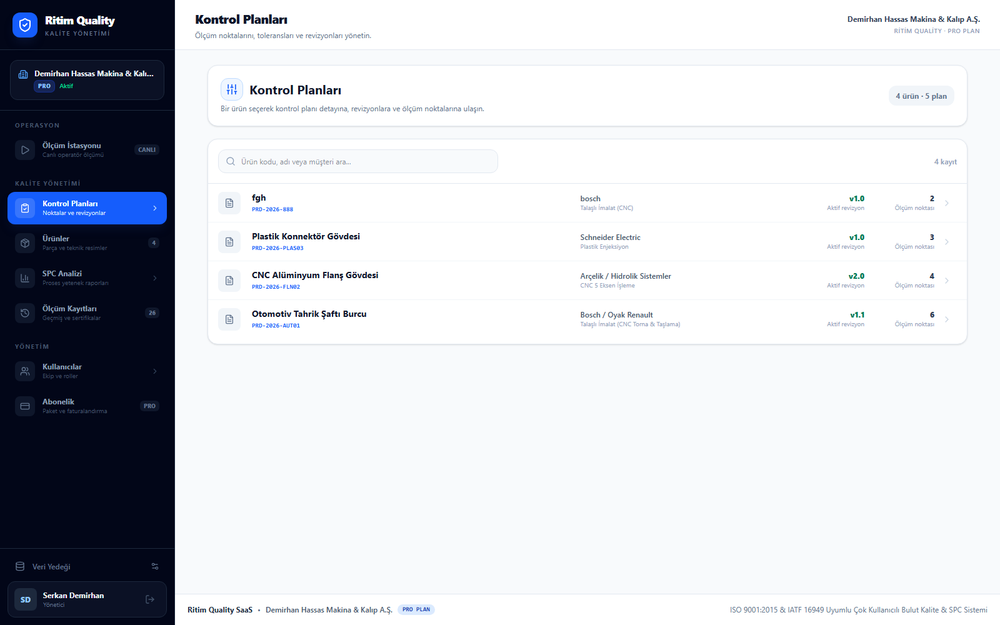
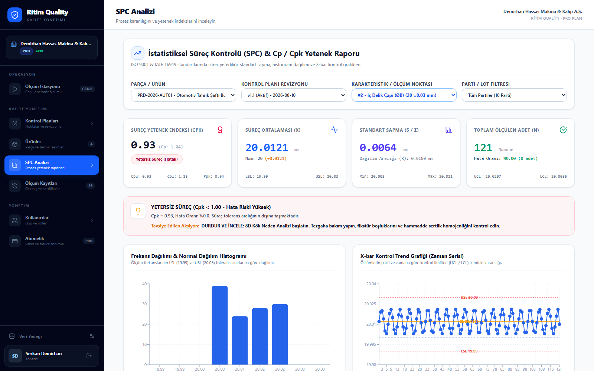

| Ritim Quality |
Kalite Yönetimi |
|
|
Üretim kalite platformu
Teknik resimden SPC analizine, kalite süreciniz tek ekranda.
Ritim Quality; kontrol planlarını, operatör ölçümlerini ve proses analizlerini izlenebilir bir dijital akışta bir araya getirir.
Ücretsiz demo planlayın
|
|
Merhaba {{AD}},
Kalite ölçümleri farklı Excel dosyalarında, formlarda ve cihaz çıktılarında kaldığında doğru veriye ulaşmak zorlaşır. Ritim Quality, üretim kalite sürecini teknik resimden başlayarak tek bir dijital akışta yönetmenizi sağlar.
|
✓ Revizyon kontrollü kontrol planları
✓ Teknik resim üzerinde yönlendirmeli ölçüm
✓ Sayısal, OK/NOK ve görsel kontroller
✓ Otomatik Cp/Cpk, histogram ve trend analizi
✓ Ürün, lot, seri ve operatör bazında izlenebilirlik
|
|
|

|
Operatör için sade, üretim için hızlı
Operatör, teknik resimde vurgulanan noktayı ölçer, sonucu girer ve bir sonraki adıma geçer. Tolerans kontrolü sistem tarafından anında yapılır.
|
|

|
Kontrol planları ve revizyonlar tek yerde
Her ürünün kontrol noktaları, toleransları ve ölçüm yöntemleri merkezi olarak yönetilir. Geçmiş ölçümlerin bağlı olduğu plan revizyonu korunur.
|
|

|
Veriden aksiyona: otomatik SPC
Ölçümler kaydedildikçe süreç ortalaması, standart sapma, Cp/Cpk, histogram ve trend grafikleri otomatik hazırlanır.
|
Kalite sürecinizi birlikte dijitalleştirelim.
Ritim Quality'nin fabrikanızdaki sürece nasıl uyarlanabileceğini kısa bir demoda görün.
Demo talep edin
|
Ritim Quality
{{TELEFON}} · {{E_POSTA}} · {{WEB_SITESI}}
Bu e-postayı Ritim Quality hakkında bilgi talep ettiğiniz veya kurumsal iletişim kapsamında aldınız.
|